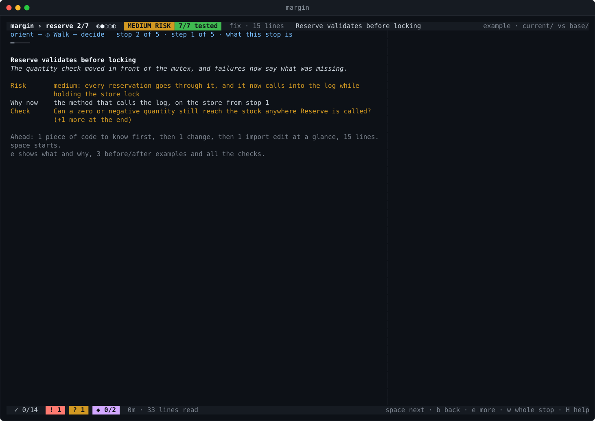
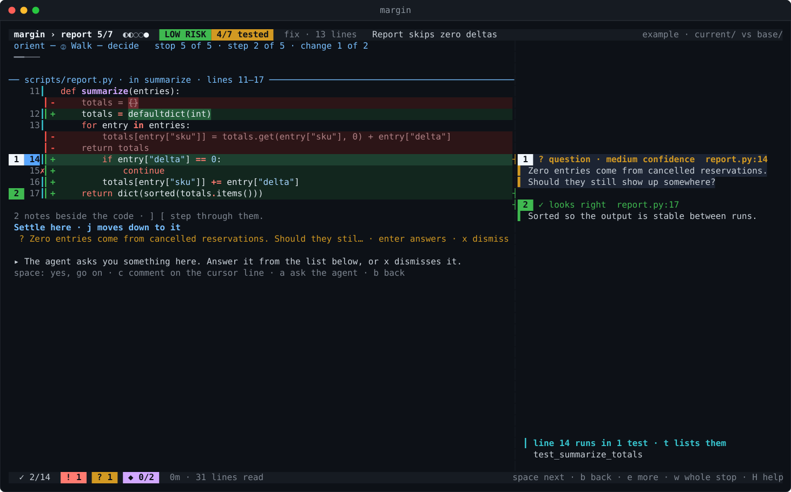

①Orient
One screen, one question.
What the change is for, what it actually does, and the gap between the two. Then the route. Then, before a single line of code: does this make sense, done this way?
y walk it? not sure yetn say why, skip to decide

②Walk
Every stop opens with a card.
What it is, how risky, why it comes now, and the one thing to check. You know what you are looking for before you look.

②Walk
One change per step.
A whole reading unit, with the agent's notes numbered beside their lines and a question to answer before space. Import churn is batched at the end so it never interrupts.

②Walk
Settle it where it belongs.
Problems to agree with, calls to make, questions only the author can answer — listed right under the code they are about. Nothing piles up for the end.

②Walk
Comments the author can act on.
c asks the kind first — issue, suggestion, question, nitpick, praise, thought — and coaches you while you type. S sends them; the agent fixes the code or explains why not.

③Decide
The recap tells you what to do.
Approve, request changes, or not finished — with the reasons and every open item one enter away. margin export makes it a PR review you post yourself.